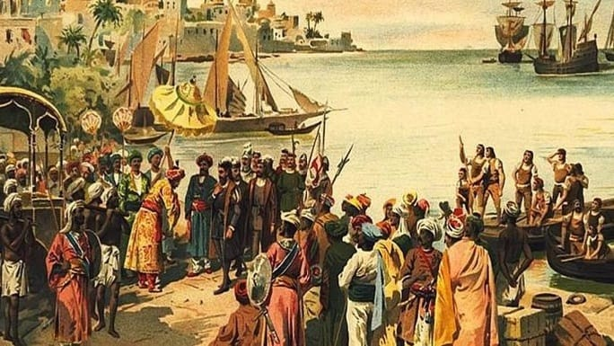

Sejarah

Saat ini, saya menyukai pelajaran sejarah, karna sejarah membuat saya menjadi penasaran akan masa lampau,
dan sangat menarik untuk di cari tahu,konspirasi konspirasi zaman dahulu,kehidupan zaman dahulu,saya sangat tertarik ingin mengetahuinya,
selain karna tertarik tentang masa lampau, saya juga suka mencatat, pelajaran sejarah juga dominan mencatat materi di buku tulis.
Makanan Favorit
Kalo soal makanan, saya menyukai semua makanan, tapi yang paling favorit adalah siomay, karna rasanya yg enakkk bangettt,
dengan perpaduan bumbu kacang dan batagor, itu enak banget si,intinya makanan favorit saya saat ini adalah siomay.
Hobi
Saya Suka membaca buku, novel, buku pelajaran. karna ketika membaca buku pelajaran itu sangat menambah wawasan.
dan ketika membaca novel itu sangat menghibur saya.